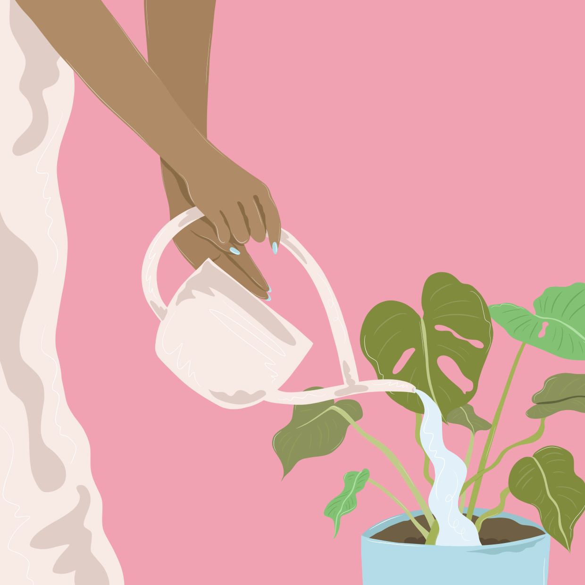
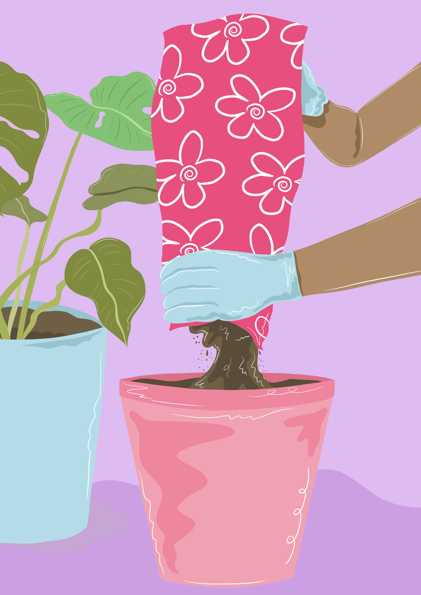
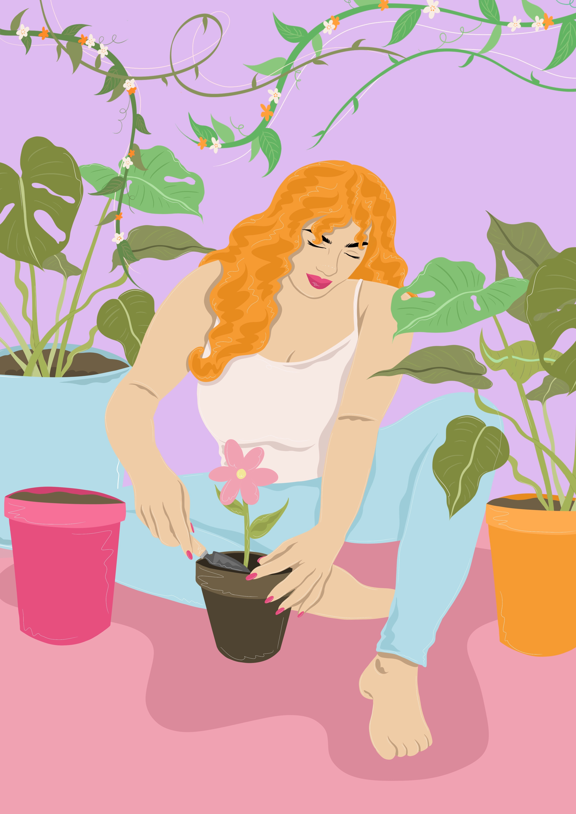

Plant Care
Planting Quiz
The Green Thumb Rules
of
No Nonsense Plant Care
Hint: Select the image to reveal the answer!
When Should I...
1. Water My Plants ?

2. Feed My Plants?

3. Change The Soil?

Image Credit: Holly | Adobe Stock | Edu. Lic.